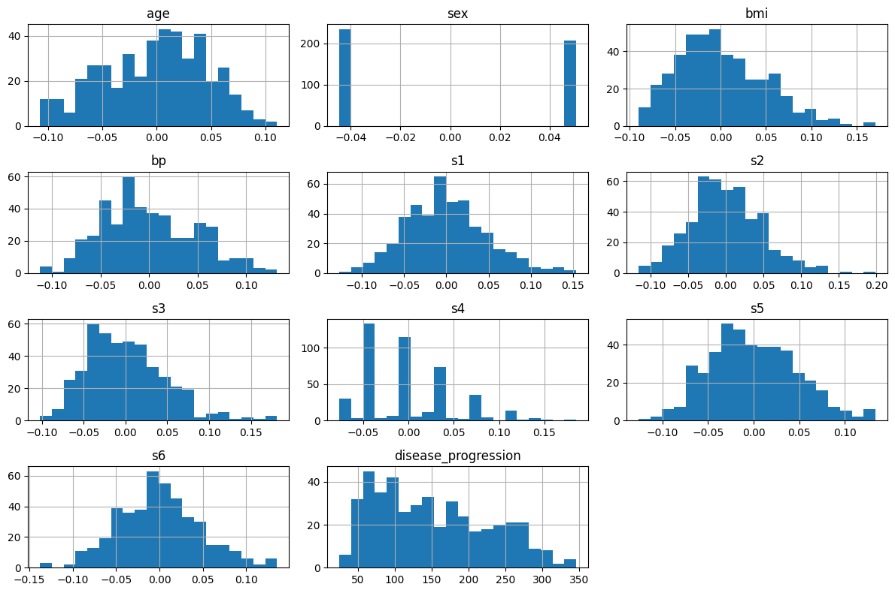
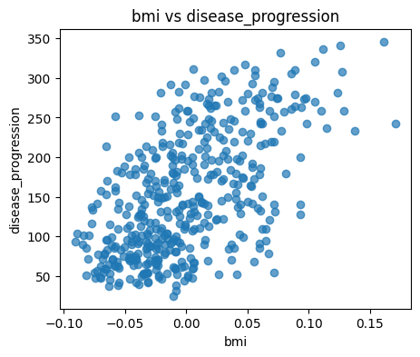
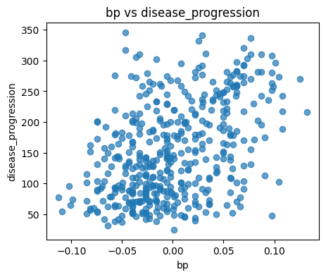
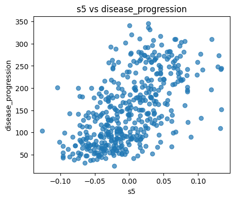

Welcome! In this lesson we will introduce regression as a supervised learning task for predicting continuous outcomes. We’ll set the stage for the course, outline the models we will study, and load our first dataset (the Diabetes dataset from scikit-learn).
Learning objectives - Understand the goal of regression and how it differs from classification. - Recognize common regression model families and when to use them. - Get familiar with the Diabetes dataset we will use throughout the first part of the course. - Perform a light EDA (exploratory data analysis) to understand features and the target.
Workshop logistics: NCI ARE & setup
When: Thursday 11 September 2025, 9:30am–1:30pm AEST (online)
Where: NCI ARE platform via your web browser (no local installs). A reliable internet connection is required; a second monitor is recommended.
Bring: Your own computer, browser, and your NCI account ready. Setup instructions will be provided ahead of time.
Who: Researchers from Australian universities and Australian researchers using (or planning to use) NCI.
Prerequisites - Basic Python (e.g., Intro to Python / Software Carpentry) and fundamental statistics. - No prior machine learning experience is required.
Performance & parallelisation (preview) - Many scikit-learn estimators support implicit parallelism with n_jobs=-1 (use all available cores on ARE). We will use this later for tree ensembles and cross‑validation. - For Bayesian inference with cmdstanpy, we will demonstrate running multiple chains in parallel on ARE. - We will also discuss lightweight tips for using NCI resources efficiently (e.g., monitoring, avoiding oversubscription).
Details and hands‑on examples will appear in later notebooks (Random Forests, Model Evaluation, and Bayesian Regression).
What is Regression? How is it different from Classification?
Classification: predict a category/label (e.g., healthy vs. sick).
Regression: predict a continuous value (e.g., blood pressure, medical costs).
We assume a data-generating process of the form \[
\hat{y} = f(X) + \varepsilon
\] where: - \(\hat{y}\) is the model’s prediction for the target \(y\), - \(X \in \mathbb{R}^{n \times p}\) is the feature matrix with \(n\) samples and \(p\) features, - \(f(\cdot)\) is the (unknown) function we wish to approximate, - \(\varepsilon\) is random noise (mean zero, finite variance).
Common Model Families We Will Study
Linear models (e.g., Ordinary Least Squares)
Regularized linear models (Ridge, Lasso)
Tree-based models (Decision Tree, Random Forest)
Neural networks (Multi-Layer Perceptron for regression)
Each family captures different types of relationships and trade-offs between bias, variance, and interpretability.
Bias–Variance (Intuition)
When choosing models, we balance bias (error from overly simple assumptions) and variance (error from sensitivity to the specific training data).
The expected generalization error can be decomposed (for squared loss) into bias, variance, and irreducible noise: \[
\mathbb{E}\left[(y - \hat{f}(X))^2\right] = \underbrace{\text{Bias}^2}_{\text{underfitting}} + \underbrace{\text{Variance}}_{\\text{overfitting}} + \underbrace{\sigma^2}_{\text{noise}}.
\]
High bias\(\rightarrow\) underfitting (model too simple).
High variance\(\rightarrow\) overfitting (model too complex).
We will use evaluation metrics and diagnostic plots (e.g., residual plots, learning curves) to reason about this balance.
Datasets Used in This Course
We will start with the Diabetes dataset that ships with scikit-learn (small, clean, numeric). Later, we will bring in the Medical Insurance dataset (real-world, mixed numeric & categorical features) to practice preprocessing and feature engineering.
Diabetes dataset (regression) - Target: Quantitative measure of disease progression one year after baseline. - Features: 10 baseline variables such as age, sex, BMI, blood pressure, and serum measurements. - Why start here? Small, quick to train, great for teaching core concepts.
# Load and preview the Diabetes dataset (built into scikit-learn)from sklearn.datasets import load_diabetesimport pandas as pddata = load_diabetes(as_frame=True)df = data.frame.copy() # includes features and target under 'target'df.rename(columns={'target': 'disease_progression'}, inplace=True)print("Shape:", df.shape)df.head()
disease_progression (target): a quantitative measure of disease progression one year after baseline
Note: Features are already standardized (mean ~0, variance ~1). This helps many models converge quickly and makes coefficients comparable in linear models.
# Basic EDAdf.describe(include='all')
age
sex
bmi
bp
s1
s2
s3
s4
s5
s6
disease_progression
count
4.420000e+02
4.420000e+02
4.420000e+02
4.420000e+02
4.420000e+02
4.420000e+02
4.420000e+02
4.420000e+02
4.420000e+02
4.420000e+02
442.000000
mean
-2.511817e-19
1.230790e-17
-2.245564e-16
-4.797570e-17
-1.381499e-17
3.918434e-17
-5.777179e-18
-9.042540e-18
9.293722e-17
1.130318e-17
152.133484
std
4.761905e-02
4.761905e-02
4.761905e-02
4.761905e-02
4.761905e-02
4.761905e-02
4.761905e-02
4.761905e-02
4.761905e-02
4.761905e-02
77.093005
min
-1.072256e-01
-4.464164e-02
-9.027530e-02
-1.123988e-01
-1.267807e-01
-1.156131e-01
-1.023071e-01
-7.639450e-02
-1.260971e-01
-1.377672e-01
25.000000
25%
-3.729927e-02
-4.464164e-02
-3.422907e-02
-3.665608e-02
-3.424784e-02
-3.035840e-02
-3.511716e-02
-3.949338e-02
-3.324559e-02
-3.317903e-02
87.000000
50%
5.383060e-03
-4.464164e-02
-7.283766e-03
-5.670422e-03
-4.320866e-03
-3.819065e-03
-6.584468e-03
-2.592262e-03
-1.947171e-03
-1.077698e-03
140.500000
75%
3.807591e-02
5.068012e-02
3.124802e-02
3.564379e-02
2.835801e-02
2.984439e-02
2.931150e-02
3.430886e-02
3.243232e-02
2.791705e-02
211.500000
max
1.107267e-01
5.068012e-02
1.705552e-01
1.320436e-01
1.539137e-01
1.987880e-01
1.811791e-01
1.852344e-01
1.335973e-01
1.356118e-01
346.000000
First Look: What to Notice
Scales: Here they are standardized, which simplifies model training.
Distributions: Skewness/heavy tails can affect error metrics (e.g., MAE vs RMSE).
Target behavior: Understanding the spread of disease_progression will help interpret errors later.
# Histograms for features and targetimport matplotlib.pyplot as plt_ = df.hist(figsize=(12, 8), bins=20)plt.tight_layout()plt.show()

Why histograms? - Quick sense of distribution shape (normality, skewness, outliers). - Helps anticipate when certain models/metrics might struggle.
# Scatter plots: individual features vs targetimport matplotlib.pyplot as pltfeatures_to_plot = ['bmi', 'bp', 's5']for col in features_to_plot: plt.figure(figsize=(5,4)) plt.scatter(df[col], df['disease_progression'], alpha=0.7) plt.xlabel(col) plt.ylabel('disease_progression') plt.title(f'{col} vs disease_progression') plt.show()



Reading these plots - A monotonic trend (up or down) suggests a linear component. - Curvature suggests possible non-linear relationships (trees, interactions, neural nets may help). - Heteroscedasticity (variance changing with \(x\)) foreshadows issues for ordinary least squares assumptions.
What Comes Next
In the next notebook, we will fit a Linear Regression model on this dataset and discuss: - The linear model \(\hat{y} = \beta_0 + \sum_{j=1}^p \beta_j x_j\) - Ordinary Least Squares (OLS) objective and closed-form solution - Interpreting coefficients and assumptions - First set of evaluation metrics and diagnostic plots (moved fully to the following notebook)
We will then follow with a dedicated Model Evaluation notebook to build robust instincts for diagnosing bias/variance, under/overfitting, and when to consider regularization or non-linear models.
Short Exercises (Optional)
Using the scatter plots above, which feature seems most correlated with disease_progression? Why?
Compute the correlation matrix and identify the top-3 features most correlated with the target.
(Think) What kinds of clinical or biological processes might explain non-linear patterns in this dataset? How would that influence your model choice?
# (Optional) Correlation matrix to support Exercise 2corr = df.corr(numeric_only=True)corr['disease_progression'].sort_values(ascending=False)
disease_progression 1.000000
bmi 0.586450
s5 0.565883
bp 0.441482
s4 0.430453
s6 0.382483
s1 0.212022
age 0.187889
s2 0.174054
sex 0.043062
s3 -0.394789
Name: disease_progression, dtype: float64